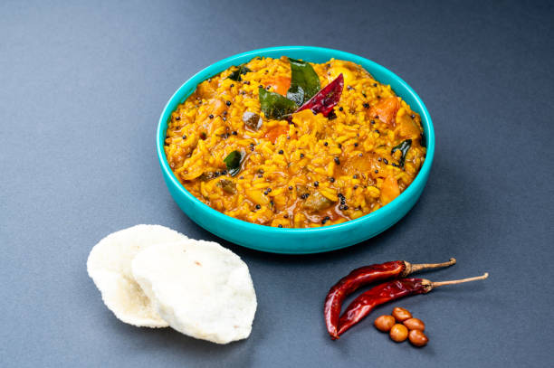

Back to States
Bisi Bele Bath

Ingredients
- 1 cup rice
- 1/2 cup toor dal
- 1/2 cup chopped vegetables (carrot, beans, peas)
- 1 small onion (sliced)
- 2 tbsp Bisi Bele Bath powder
- 1 tbsp tamarind pulp
- Salt to taste
- 2 tbsp ghee
- 1 tsp mustard seeds
- 1/2 tsp turmeric
- Curry leaves
- Cashews for garnish
Instructions
1. Pressure cook rice and dal separately until soft.
2. Cook vegetables with a pinch of salt and turmeric.
3. In a pan, heat ghee and splutter mustard seeds. Add curry leaves and onions.
4. Add the cooked vegetables, tamarind pulp, and Bisi Bele Bath powder. Mix well.
5. Add the cooked dal and rice. Adjust consistency with water.
6. Simmer for 5–10 minutes. Garnish with ghee-fried cashews.
7. Serve hot with papad or raita.